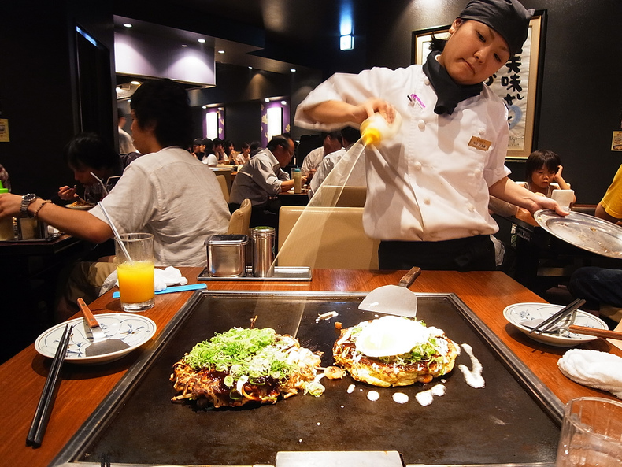

OKONOMIYAKI
|  Okonomiyaki (お好み焼き? o-konomi-yaki) (About this sound listen (help·info)) is a Japanese savoury pancake containing a variety of ingredients. The name is derived from the word okonomi, meaning "how you like" or "what you like", and yaki meaning "grill" (cf. yakitori and yakisoba). Okonomiyaki is mainly associated with the Kansai or Hiroshima areas of Japan, but is widely available throughout the country. Toppings and batters tend to vary according to region. Tokyo okonomiyaki is usually smaller than a Hiroshima or Kansai okonomiyaki. |
Essential Ingredients of Okonomiyaki: about 1/2 a large cabbage, 2 cups flour (I use self-raising, my mother says plain flour), 2 2/3 cups water, 4 eggs, 2 tsp dashi powder (can be replaced by chicken stock powder), Okonomi Sauce or Tonkatsu Sauce, Other ingredients I used tonight: About 6-8 short-cut bacon rashers (Thinly sliced pork is better but it's a little difficult to get in Australian supermarkets), 1 Tbsp beni-shouga (pickled ginger) chopped finely, 1 large negi (shallots/scallions/spring onions) sliced thinly, Japanese Mayonnaise, 10g Katsuo-bushi, Ao-nori, Oil, Step: 1.Finely slice cabbage. (After slicing, bruising it by squeezing in your hands also helps soften it). 2.Mix flour, water, eggs in a large mixing bowl. Mix in dashi, pickled ginger and some negi. Add cabbage and combine well. 3.Heat a little oil in a frypan. Spoon Cabbage into the frypan, to make a circle about 22cm(9in) across and 1.5cm(3/4in) thick. Make sure there's enough batter to hold it together. Neaten the edges by using a spatula to push in the edges and any cabbage or batter that's sticking out. Place thinly sliced pork on top (or bacon). 4.Cook over med-low heat about 5 min. Flip, then cook another 3-5 min. When cooked through, turn onto a plate, meat side UP. 5.Spread sauce generously on top. Decorate with Mayonnaise, Katsuobushi and Ao-nori |